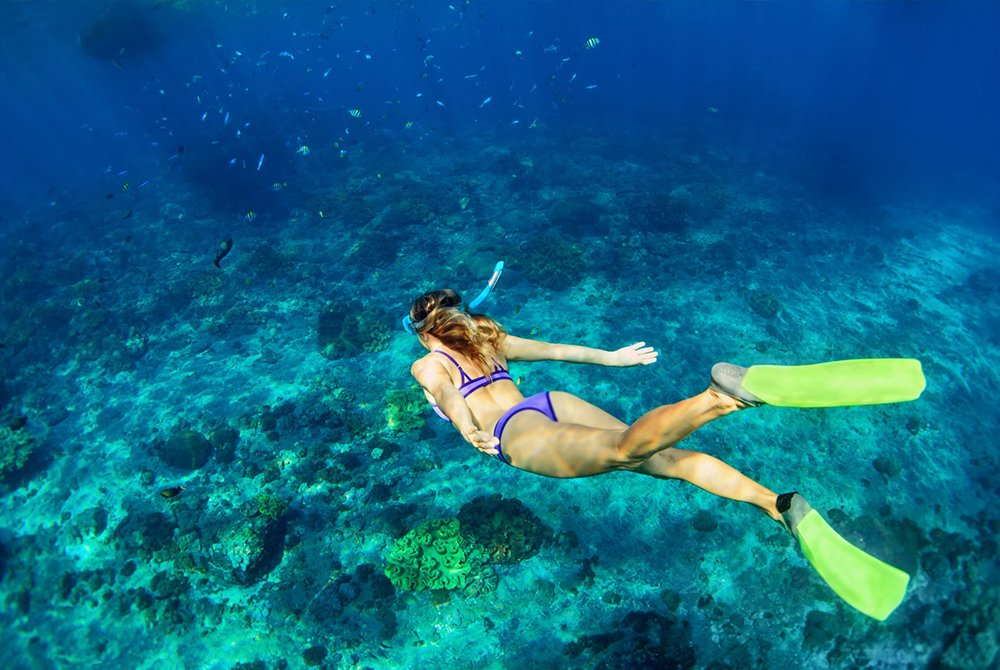
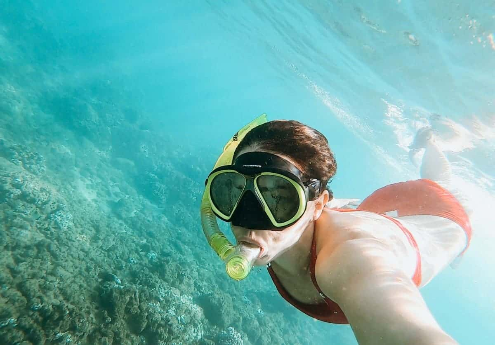
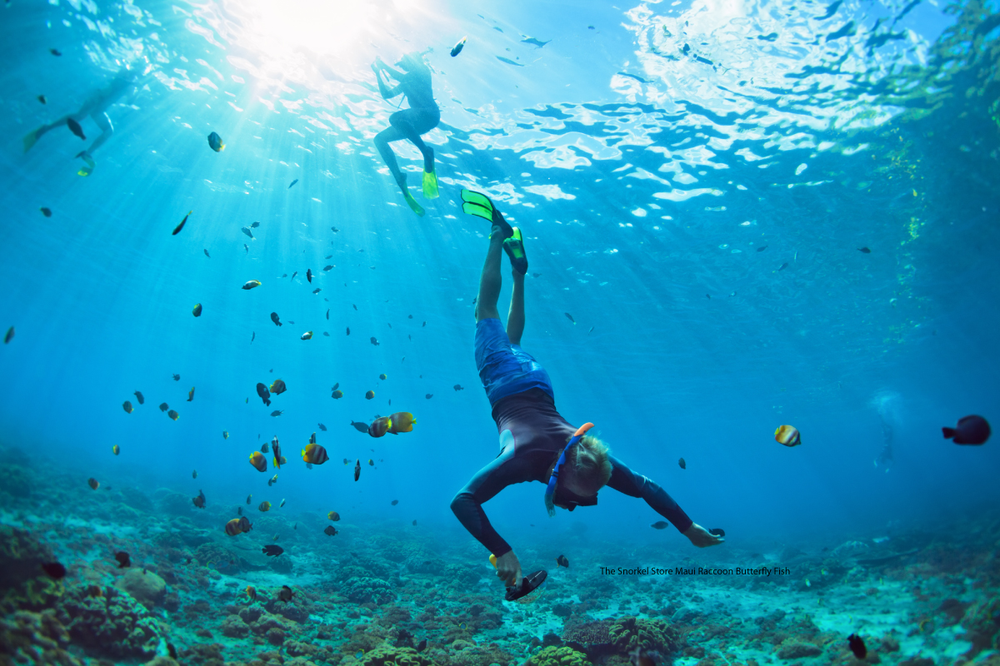
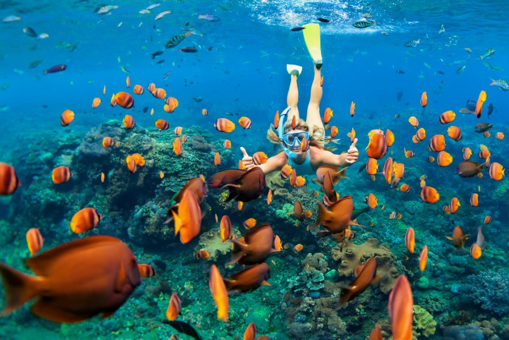
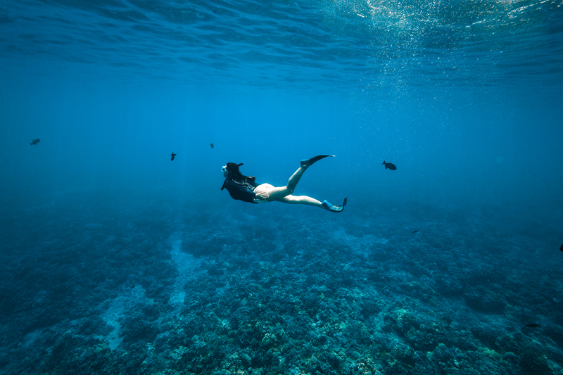

The Best Snorkeling Spots on Maui
Maui, with its pristine beaches, crystal-clear waters, and vibrant marine life, stands as a haven for snorkeling enthusiasts. Join us as we dive into the top snorkel spots across the island.
Five places where clear water, reef life and the character of Maui meet.

A Haven for Snorkeling Enthusiasts
If you're ready to explore the mesmerizing world beneath the waves, you're in for a treat. Join us as we dive into the top snorkel spots in Maui, where the kaleidoscope of colors and diverse marine ecosystems await.
From volcanic craters just off the coast to protected marine reserves and calm shore-accessible coral gardens, Maui offers extraordinary aquatic adventures for every level of explorer.

Molokini Crater & Honolua Bay
1. Molokini Crater:
A crescent-shaped, partially submerged volcanic crater, Molokini is a snorkeler's paradise. Located just a few miles off the coast of Maui, this marine preserve is home to an abundance of marine life. The clarity of the water here is unparalleled, providing an ideal setting for snorkelers to witness colorful coral gardens and an array of tropical fish. Boat tours to Molokini often include educational guides who can enhance your snorkeling experience with insights into the unique marine species that inhabit the area.
2. Honolua Bay:
Nestled on Maui's northwest coast, Honolua Bay is a marine-protected area teeming with marine life. The bay's calm waters and vibrant coral reefs make it an excellent spot for both beginners and experienced snorkelers. Snorkeling at Honolua Bay offers a chance to encounter green sea turtles, colorful reef fish, and even the occasional monk seal. The best time to visit is during the summer months when the water is typically calm and visibility is at its peak.

Ahihi Kinau & Napili Bay
3. Ahihi Kinau Natural Area Reserve:
For those seeking a more off-the-beaten-path experience, Ahihi Kinau Natural Area Reserve is a hidden gem. Located on Maui's southern coast, this reserve boasts a lava rock shoreline and a protected marine environment. The unique underwater topography, including lava arches and caves, provides a dramatic backdrop for snorkelers. Be prepared to encounter a variety of marine life, including octopuses, eels, and colorful reef dwellers. Due to its fragile ecosystem, it's crucial to practice responsible snorkeling by avoiding contact with coral and marine life.
4. Napili Bay:
With its crescent-shaped sandy beach and clear turquoise waters, Napili Bay is a family-friendly snorkel spot on Maui. The shallow reef close to the shore makes it an ideal location for beginners and young snorkelers. Tropical fish, sea turtles, and vibrant coral formations are commonly spotted in this picturesque bay. The laid-back atmosphere and stunning sunset views make Napili Bay an all-around favorite for snorkeling and relaxation.

5. Olowalu
Olowalu, located between Lahaina and Maalaea, is known for its coral gardens and diverse marine life. The reef here is home to an abundance of fish species, making it a fantastic snorkel spot for underwater enthusiasts.
One highlight is the chance to encounter the Hawaiian green sea turtle, a frequent visitor to Olowalu's warm and nutrient-rich waters. Snorkelers can access the reef directly from the shore, making it convenient for those who prefer not to venture far from land.
A Kaleidoscope of Underwater Wonders
Maui's snorkel spots offer a kaleidoscope of underwater wonders, from vibrant coral gardens to diverse marine life. Whether you're a seasoned snorkeler or a first-timer, the island provides a range of options for an unforgettable aquatic adventure. So grab your snorkel gear, dive into the warm Pacific waters, and let Maui's underwater beauty captivate your senses.
And don’t forget to book your family portrait photoshoot...
Capture your family's precious memories in Maui with Wailea Photo before or after your underwater adventures.
View Sessions & Pricing